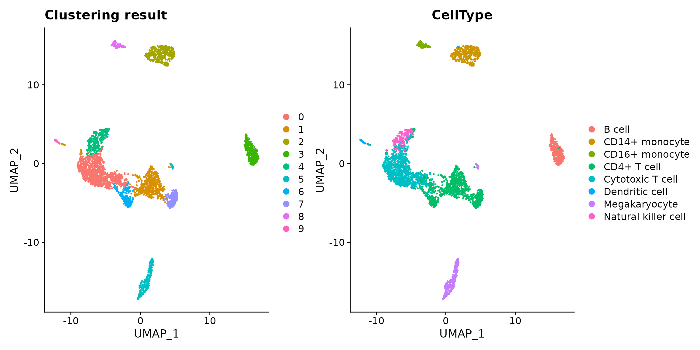
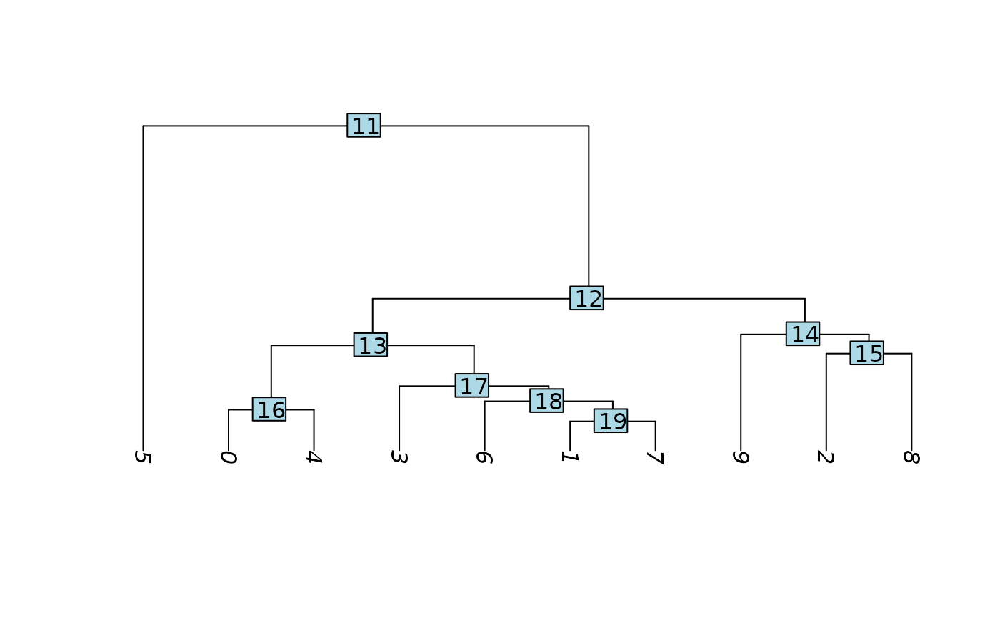
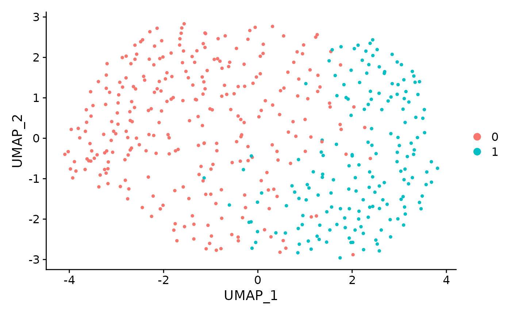
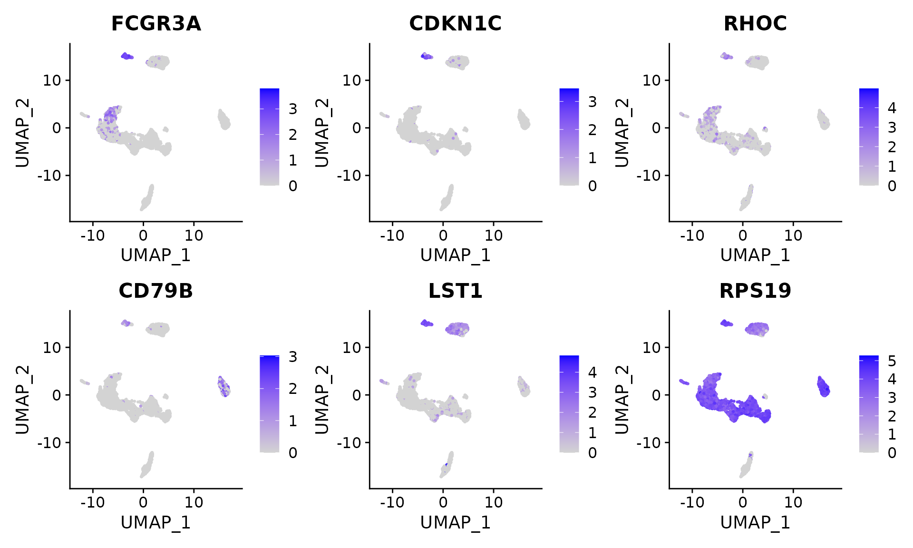
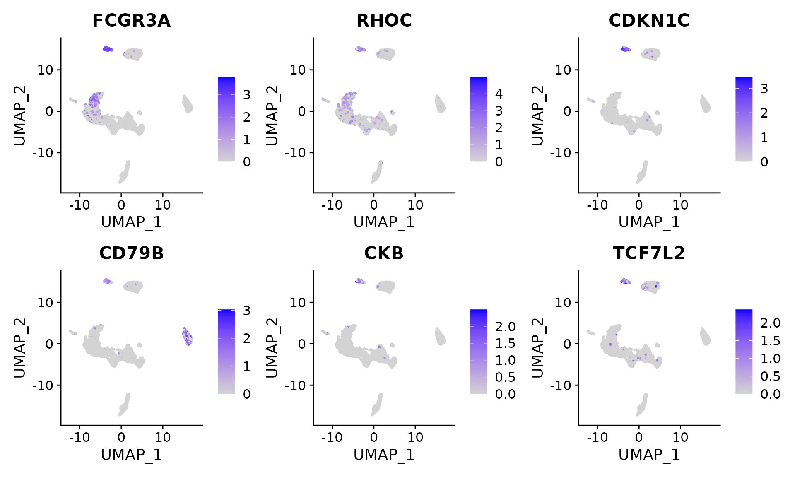

Perform ClusterDE on a PBMC dataset
Dongyuan Song
Bioinformatics IDP, University of California, Los Angelesdongyuansong@ucla.edu
6 July 2023
Source:vignettes/ClusterDE-PBMC.Rmd
ClusterDE-PBMC.Rmd
tools::R_user_dir("ClusterDE", which="cache")
library(ClusterDE)
library(Seurat)
library(SingleCellExperiment)
library(ggplot2)
library(patchwork)
library(SeuratData)
library(Matrix)Download data
The PBMC datasets are from SeuratData. We use one of
them (10x Chromium (v3) from PBMC1 replicate). We filtered out some
lowly epxressed genes to save computational time here.
InstallData("pbmcsca")
#> Warning: The following packages are already installed and will not be
#> reinstalled: pbmcsca
data("pbmcsca")
pbmc <- pbmcsca[, pbmcsca@meta.data$Method=="10x Chromium (v3)" & pbmcsca@meta.data$Experiment == "pbmc1"]
pbmc <- pbmc[Matrix::rowSums(pbmc@assays$RNA@counts) > 100, ]Run the regular Seurat pipeline
We perform the default Seurat clustering. Note that in real data analysis, the cell type label is usually unknown.
RNGkind("L'Ecuyer-CMRG")
set.seed(123)
pbmc <- NormalizeData(object = pbmc)
pbmc <- FindVariableFeatures(object = pbmc)
pbmc <- ScaleData(object = pbmc)
#> Centering and scaling data matrix
pbmc <- RunPCA(object = pbmc)
#> PC_ 1
#> Positive: IL32, CCL5, TRBC2, TRAC, CD69, CST7, RORA, CTSW, SPOCK2, ITM2A
#> GZMM, CD247, TRBC1, C12orf75, IL7R, CD8A, CD2, LDHB, GZMA, CD7
#> NKG7, CD6, GZMH, CD8B, BCL11B, PRF1, LYAR, LTB, FGFBP2, TCF7
#> Negative: LYZ, FCN1, CLEC7A, CPVL, SERPINA1, SPI1, S100A9, AIF1, NAMPT, CSTA
#> CTSS, MAFB, MPEG1, NCF2, VCAN, FGL2, S100A8, TYMP, CST3, LST1
#> CYBB, CFD, FCER1G, SLC11A1, TGFBI, GRN, CD14, PSAP, SLC7A7, MS4A6A
#> PC_ 2
#> Positive: RPL10, EEF1A1, TMSB10, RPS2, RPS12, RPL13, RPS18, RPS23, RPLP1, TPT1
#> RPS8, IL32, S100A4, PFN1, RPLP0, NKG7, ARL4C, HSPA8, CST7, ZFP36L2
#> ANXA1, CTSW, S100A6, LDHA, CORO1A, CD247, GZMA, CALR, S100A10, GZMM
#> Negative: NRGN, PF4, SDPR, HIST1H2AC, MAP3K7CL, PPBP, GNG11, GPX1, TUBB1, SPARC
#> CLU, PGRMC1, FTH1, RGS18, MARCH2, TREML1, HIST1H3H, AP003068.23, NCOA4, ACRBP
#> TAGLN2, PRKAR2B, CD9, CA2, CMTM5, CTTN, MTURN, TMSB4X, HIST1H2BJ, TSC22D1
#> PC_ 3
#> Positive: CD79A, HLA-DQA1, MS4A1, LINC00926, IGHM, BANK1, IGHD, TNFRSF13C, HLA-DQB1, CD74
#> IGKC, HLA-DRA, BLK, CD83, CD37, CD22, ADAM28, JUND, NFKBID, HLA-DRB1
#> P2RX5, CD79B, VPREB3, IGLC2, FCER2, RPS8, LTB, RPS23, TCOF1, GNG7
#> Negative: CCL5, TMSB4X, SRGN, NKG7, ACTB, CST7, GZMH, FGFBP2, CTSW, PRF1
#> GZMA, GZMB, C12orf75, S100A4, ANXA1, KLRD1, NRGN, GNLY, GZMM, IL32
#> PF4, SDPR, PPBP, MYO1F, CD247, GAPDH, MAP3K7CL, HIST1H2AC, GNG11, TUBB1
#> PC_ 4
#> Positive: FCGR3A, GZMB, FGFBP2, GZMH, NKG7, HLA-DPA1, PRF1, HLA-DPB1, CST7, GNLY
#> KLRD1, HLA-DRB1, GZMA, CCL5, SPON2, ADGRG1, CTSW, ZEB2, PRSS23, IFITM2
#> CCL4, CD74, KLRF1, RHOC, MTSS1, CDKN1C, CD79B, CEP78, HLA-DQA1, CLIC3
#> Negative: IL7R, LEPROTL1, LTB, RCAN3, MAL, LEF1, TCF7, ZFP36L2, CAMK4, VIM
#> LDHB, NOSIP, JUNB, SLC2A3, TRABD2A, RGCC, SATB1, TNFAIP3, TMEM123, SOCS3
#> AQP3, BCL11B, NELL2, TNFRSF25, CD28, PABPC1, DNAJB1, TRAT1, OXNAD1, TRAC
#> PC_ 5
#> Positive: CDKN1C, HES4, CSF1R, CKB, ZNF703, TCF7L2, CTSL, MS4A7, PAG1, FAM110A
#> SIGLEC10, LRRC25, FCGR3A, LTB, RNASET2, CDH23, IL7R, RRAS, LINC01272, IFITM3
#> LST1, LILRB2, PILRA, RHOC, SLC2A6, PECAM1, CAMK1, TAGLN, IFI30, BID
#> Negative: VCAN, S100A12, S100A8, CD14, CSF3R, ITGAM, CST7, GZMB, MT-CO1, GNLY
#> KLRD1, PRF1, MS4A6A, GZMH, FGFBP2, CD93, EGR1, NKG7, S100A9, MT-CO3
#> IER3, THBS1, RNASE6, CLEC4E, MGST1, CTSW, SGK1, GZMA, RP11-1143G9.4, CH17-373J23.1
pbmc <- FindNeighbors(object = pbmc)
#> Computing nearest neighbor graph
#> Computing SNN
pbmc <- FindClusters(object = pbmc, resolution = 0.3)
#> Modularity Optimizer version 1.3.0 by Ludo Waltman and Nees Jan van Eck
#>
#> Number of nodes: 3222
#> Number of edges: 108605
#>
#> Running Louvain algorithm...
#> Maximum modularity in 10 random starts: 0.9363
#> Number of communities: 10
#> Elapsed time: 0 seconds
pbmc <- RunUMAP(object = pbmc, dims = 1:10)
#> Warning: The default method for RunUMAP has changed from calling Python UMAP via reticulate to the R-native UWOT using the cosine metric
#> To use Python UMAP via reticulate, set umap.method to 'umap-learn' and metric to 'correlation'
#> This message will be shown once per session
#> 11:54:20 UMAP embedding parameters a = 0.9922 b = 1.112
#> 11:54:20 Read 3222 rows and found 10 numeric columns
#> 11:54:20 Using Annoy for neighbor search, n_neighbors = 30
#> 11:54:20 Building Annoy index with metric = cosine, n_trees = 50
#> 0% 10 20 30 40 50 60 70 80 90 100%
#> [----|----|----|----|----|----|----|----|----|----|
#> **************************************************|
#> 11:54:21 Writing NN index file to temp file /tmp/RtmpBgKPn5/file2a645179ffaf53
#> 11:54:21 Searching Annoy index using 1 thread, search_k = 3000
#> 11:54:22 Annoy recall = 100%
#> 11:54:22 Commencing smooth kNN distance calibration using 1 thread with target n_neighbors = 30
#> 11:54:23 Initializing from normalized Laplacian + noise (using irlba)
#> 11:54:24 Commencing optimization for 500 epochs, with 126446 positive edges
#> 11:54:27 Optimization finished
DimPlot(object = pbmc, reduction = "umap") + ggtitle("Clustering result") +
DimPlot(object = pbmc, reduction = "umap", group.by = "CellType")
In this vignette, we are interested in cluster 2 vs 8, which
approximately represent CD14+/CD16+ monocytes. Please note that
ClusterDE is designed for 1 vs 1 comparison. Therefore, users may (1)
choose the two interested clusters manually based on their knowledge or
(2) use the two closest clusters from computation (e.g.,
BuildClusterTree in Seurat).
pbmc <- BuildClusterTree(pbmc)
PlotClusterTree(pbmc)
We perform the DE test between cluster 2 and 8. We subset the cluster
2 and 8 (pbmc_sub).
pbmc_sub <- subset(x = pbmc, idents = c(2, 8))
original_markers <- FindMarkers(pbmc_sub,
ident.1 = 2,
ident.2 = 8,
min.pct = 0,
logfc.threshold = 0)Generate synthetic null data
We first generate the synthetic null data based on the target data
(real subset data, pbmc_sub, which contains the two
clusters you are interested in). You can increase the number of cores to
speed it up.
count_mat <- GetAssayData(object = pbmc_sub, slot = "counts")
set.seed(123)
synthetic_null <- ClusterDE::constructNull(count_mat, nCores = 2)
#> Input Data Construction Start
#> Input Data Construction End
#> Start Marginal Fitting
#> Marginal Fitting End
#> Start Copula Fitting
#> Convert Residuals to Multivariate Gaussian
#> Converting End
#> Copula group 1 starts
#> Copula Fitting End
#> Start Parameter Extraction
#> Parameter
#> Extraction End
#> Start Generate New Data
#> Use Copula to sample a multivariate quantile matrix
#> Sample Copula group 1 starts
#> New Data Generating EndWe perform the same pipeline as we did for target data. Please note we need two clusters here, too. This is straightforward for clustering method with predefined cluster numbers, e.g., K-means. For louvain clustering used in Seurat you may manually adjust the resolution parameter so that we still get two clusters.
pbmc_null <- CreateSeuratObject(counts = synthetic_null)
set.seed(123)
pbmc_null <- NormalizeData(object = pbmc_null)
pbmc_null <- FindVariableFeatures(object = pbmc_null)
pbmc_null <- ScaleData(object = pbmc_null)
#> Centering and scaling data matrix
pbmc_null <- RunPCA(object = pbmc_null)
#> PC_ 1
#> Positive: RPS19, RPL10, FTL, LST1, B2M, RPS27, FTH1, AIF1, YBX1, NACA
#> EEF1A1, RPL7A, RPL41, RPL11, RPS2, PFN1, RPL8, COTL1, RPL14, RPS3
#> HLA-B, TMSB10, FCER1G, RPL19, ACTB, HLA-C, RPL15, TMSB4X, PTMA, RPL37A
#> Negative: VCAN, S100A8, CSF3R, FOS, LYZ, S100A9, SLC2A3, S100A12, CD14, MS4A6A
#> RGS2, THBS1, FOSB, ZFP36L1, SELL, DUSP6, RNASE6, IRF2BP2, CYP1B1, NR4A2
#> CD36, TNFAIP3, FCN1, CEBPD, ITGAM, IER3, NCF1, CKAP4, CD93, SLC25A37
#> PC_ 2
#> Positive: IFITM2, KLF2, FCGR3A, CDKN1C, RHOC, SIGLEC10, LST1, POU2F2, MALAT1, PKN1
#> LYST, MS4A7, BID, UNC119, LINC01272, SLC2A6, SAT1, MTSS1, LRRC25, CLEC2B
#> HN1, AP1M1, CSF1R, FAM110A, PTPN6, RNASET2, PIK3CG, SPN, DRAP1, ADGRE5
#> Negative: TPT1, LYZ, RPS13, GAPDH, GPX1, S100A9, S100A10, RPS3A, RPLP1, S100A8
#> CD14, VIM, VCAN, CD99, RPS6, GRN, RPS23, RPS18, RP11-1143G9.4, RPS12
#> RPL28, RPL30, RPL18A, RPL3, RPS8, FCN1, HLA-DRA, AP1S2, FOS, CPVL
#> PC_ 3
#> Positive: RGS2, HMGB2, SAMSN1, RPLP1, MGST1, GLRX, MNDA, H1FX, S100A9, PLBD1
#> BCL2A1, RPS6KA1, TNFSF10, LYST, RPS3A, RBP7, RPL30, MARCH1, S100A8, ZFP36L2
#> CHSY1, STK4, GNG2, ALOX5AP, MED10, RPS12, S100A12, RPS15A, RPL21, KLF6
#> Negative: HLA-DRA, HLA-DPB1, HLA-DRB1, HLA-DPA1, CPVL, CD74, RGCC, RUNX3, SLC43A2, MAP3K8
#> CD63, EMP3, BHLHE40, SF3A3, HLA-DMB, TIMP1, CST3, HLA-DMA, ID2, SMAD7
#> EZR, CTNNB1, NOTCH1, IFI30, CXXC5, HMOX1, CLIC1, APOBEC3A, CD300E, SH3BP5
#> PC_ 4
#> Positive: MNDA, MBD2, SNIP1, RHOB, MSH3, HERC5, CKB, CXCL8, MARCH1, SECTM1
#> P2RX1, TNFSF10, GBP2, PPM1D, ISG15, DHX29, VPS37A, RNF181, HIC1, LIN52
#> EMP3, TMEM43, CCM2, IRF1, ITGB2-AS1, LAP3, LYST, CHST15, ZCCHC2, CCNT1
#> Negative: AES, PPP2R5C, KIAA1551, CXCR4, TSPAN14, NKG7, PINK1, SLC26A11, TRAC, HLA-B
#> TMX4, HMGN3, TMEM70, ADD3, HHEX, TMCO1, CNOT6L, HERC2, ZNF544, ARL4C
#> FAM78A, GOT2, RP3-477O4.14, TRPT1, DDIT4, TNKS, IL32, SCAF8, HAGH, CXXC5
#> PC_ 5
#> Positive: ISG15, LTBR, MARCKS, CCR1, TMSB4X, STK38L, VAMP8, BLOC1S1, COX17, ACTB
#> APOBEC3A, ARPC3, ZFR, PLSCR1, HUWE1, MYO9A, IFI44, IGSF6, PLGRKT, CD151
#> TIMP1, PAXBP1, RBP7, DAAM1, DAD1, ALOX5AP, CYP20A1, PLAC8, ALDH9A1, TNFSF10
#> Negative: ASH1L, KAT6A, FAM103A1, PRDM1, EPC2, HN1, TRIP11, RPL5, XYLT1, CXCL8
#> RPL36AL, PHACTR1, CD3E, FAM32A, FAM49A, THAP7, SLC15A4, SIPA1, OSTF1, CCT3
#> IRF1, TPR, MYLIP, FARS2, PRPF4B, AMPD2, CFAP20, CXXC5, RPL14, GTF2F1
pbmc_null <- FindNeighbors(object = pbmc_null)
#> Computing nearest neighbor graph
#> Computing SNN
pbmc_null <- FindClusters(object = pbmc_null, resolution = 0.3)
#> Modularity Optimizer version 1.3.0 by Ludo Waltman and Nees Jan van Eck
#>
#> Number of nodes: 453
#> Number of edges: 18459
#>
#> Running Louvain algorithm...
#> Maximum modularity in 10 random starts: 0.7193
#> Number of communities: 2
#> Elapsed time: 0 seconds
pbmc_null <- RunUMAP(object = pbmc_null, dims = 1:10)
#> 12:00:48 UMAP embedding parameters a = 0.9922 b = 1.112
#> 12:00:48 Read 453 rows and found 10 numeric columns
#> 12:00:48 Using Annoy for neighbor search, n_neighbors = 30
#> 12:00:48 Building Annoy index with metric = cosine, n_trees = 50
#> 0% 10 20 30 40 50 60 70 80 90 100%
#> [----|----|----|----|----|----|----|----|----|----|
#> **************************************************|
#> 12:00:48 Writing NN index file to temp file /tmp/RtmpBgKPn5/file2a64514d712564
#> 12:00:48 Searching Annoy index using 1 thread, search_k = 3000
#> 12:00:48 Annoy recall = 100%
#> 12:00:50 Commencing smooth kNN distance calibration using 1 thread with target n_neighbors = 30
#> 12:00:51 Initializing from normalized Laplacian + noise (using irlba)
#> 12:00:51 Commencing optimization for 500 epochs, with 17120 positive edges
#> 12:00:52 Optimization finished
DimPlot(object = pbmc_null, reduction = "umap")
We perform the DE test on synthetic null data.
null_markers <- FindMarkers(pbmc_null,
ident.1 = 0,
ident.2 = 1,
min.pct = 0,
logfc.threshold = 0)We extract the p-values from both original data and synthetic null
data, then use ClusterDE to “compare” them.
original_pval <- original_markers$p_val
names(original_pval) <- rownames(original_markers)
null_pval <- null_markers$p_val
names(null_pval) <- rownames(null_markers)
res <- ClusterDE::callDE(original_pval, null_pval, nlogTrans = TRUE)You can check the summary table. The genes are ranked by “contrast score (cs)”.
head(res$summaryTable)
#> # A tibble: 6 × 5
#> Gene target null cs q
#> <chr> <dbl> <dbl> <dbl> <dbl>
#> 1 FCGR3A 79.0 16.3 62.7 0.00855
#> 2 RHOC 65.8 9.76 56.0 0.00855
#> 3 CDKN1C 67.5 13.7 53.8 0.00855
#> 4 CD79B 53.1 8.47 44.7 0.00855
#> 5 CKB 44.6 1.66 42.9 0.00855
#> 6 TCF7L2 43.6 8.00 35.6 0.00855To compare the result from the naive Seurat pipeline and ClusterDE, we first visualize the top 6 DE genes from Seurat. Genes LST1 and RPS19 are both highly expressed in two clusters. In addition, RPS19 is reported as a stable housekeeping genes in several studies.
FeaturePlot(pbmc, features = c(rownames(original_markers)[1:6]), ncol = 3) In contrast, the genes from ClusterDE do not have LST1 and RPS19 anymore.
FeaturePlot(pbmc, features = c(res$summaryTable$Gene[1:6]), ncol = 3)
Session information
sessionInfo()
#> R version 4.3.0 (2023-04-21)
#> Platform: x86_64-pc-linux-gnu (64-bit)
#> Running under: Ubuntu 20.04.6 LTS
#>
#> Matrix products: default
#> BLAS: /usr/lib/x86_64-linux-gnu/openblas-pthread/libblas.so.3
#> LAPACK: /usr/lib/x86_64-linux-gnu/openblas-pthread/liblapack.so.3; LAPACK version 3.9.0
#>
#> Random number generation:
#> RNG: L'Ecuyer-CMRG
#> Normal: Inversion
#> Sample: Rejection
#>
#> locale:
#> [1] LC_CTYPE=en_US.UTF-8 LC_NUMERIC=C
#> [3] LC_TIME=en_US.UTF-8 LC_COLLATE=en_US.UTF-8
#> [5] LC_MONETARY=en_US.UTF-8 LC_MESSAGES=en_US.UTF-8
#> [7] LC_PAPER=en_US.UTF-8 LC_NAME=C
#> [9] LC_ADDRESS=C LC_TELEPHONE=C
#> [11] LC_MEASUREMENT=en_US.UTF-8 LC_IDENTIFICATION=C
#>
#> time zone: America/Los_Angeles
#> tzcode source: system (glibc)
#>
#> attached base packages:
#> [1] stats4 stats graphics grDevices utils datasets methods
#> [8] base
#>
#> other attached packages:
#> [1] Matrix_1.5-4.1 stxBrain.SeuratData_0.1.1
#> [3] ssHippo.SeuratData_3.1.4 pbmcsca.SeuratData_3.0.0
#> [5] pbmc3k.SeuratData_3.1.4 ifnb.SeuratData_3.1.0
#> [7] SeuratData_0.2.2 patchwork_1.1.2
#> [9] ggplot2_3.4.2 SingleCellExperiment_1.22.0
#> [11] SummarizedExperiment_1.30.2 Biobase_2.60.0
#> [13] GenomicRanges_1.52.0 GenomeInfoDb_1.36.1
#> [15] IRanges_2.34.1 S4Vectors_0.38.1
#> [17] BiocGenerics_0.46.0 MatrixGenerics_1.12.2
#> [19] matrixStats_1.0.0 SeuratObject_4.1.3
#> [21] Seurat_4.2.0 ClusterDE_0.99.0
#> [23] BiocStyle_2.28.0
#>
#> loaded via a namespace (and not attached):
#> [1] RcppAnnoy_0.0.20 splines_4.3.0 later_1.3.1
#> [4] bitops_1.0-7 tibble_3.2.1 polyclip_1.10-4
#> [7] gamlss.data_6.0-2 rpart_4.1.19 lifecycle_1.0.3
#> [10] pbmcapply_1.5.1 rprojroot_2.0.3 globals_0.16.2
#> [13] lattice_0.21-8 MASS_7.3-60 backports_1.4.1
#> [16] magrittr_2.0.3 limma_3.56.2 Hmisc_5.1-0
#> [19] plotly_4.10.2 sass_0.4.6 rmarkdown_2.22
#> [22] jquerylib_0.1.4 yaml_2.3.7 httpuv_1.6.11
#> [25] sctransform_0.3.5 spatstat.core_2.4-4 sp_1.6-1
#> [28] spatstat.sparse_3.0-1 reticulate_1.30 rgeos_0.6-3
#> [31] cowplot_1.1.1 pbapply_1.7-0 DBI_1.1.3
#> [34] RColorBrewer_1.1-3 abind_1.4-5 zlibbioc_1.46.0
#> [37] Rtsne_0.16 purrr_1.0.1 RCurl_1.98-1.12
#> [40] nnet_7.3-19 rappdirs_0.3.3 GenomeInfoDbData_1.2.10
#> [43] ggrepel_0.9.3 irlba_2.3.5.1 listenv_0.9.0
#> [46] spatstat.utils_3.0-3 goftest_1.2-3 spatstat.random_3.1-5
#> [49] fitdistrplus_1.1-11 parallelly_1.36.0 pkgdown_2.0.7
#> [52] leiden_0.4.3 codetools_0.2-19 DelayedArray_0.26.6
#> [55] tidyselect_1.2.0 farver_2.1.1 base64enc_0.1-3
#> [58] jsonlite_1.8.7 ellipsis_0.3.2 progressr_0.13.0
#> [61] Formula_1.2-5 ggridges_0.5.4 survival_3.5-5
#> [64] systemfonts_1.0.4 tools_4.3.0 ragg_1.2.5
#> [67] ica_1.0-3 Rcpp_1.0.10 glue_1.6.2
#> [70] gridExtra_2.3 xfun_0.39 mgcv_1.8-42
#> [73] scDesign3_0.99.5 dplyr_1.1.2 withr_2.5.0
#> [76] BiocManager_1.30.21 fastmap_1.1.1 fansi_1.0.4
#> [79] digest_0.6.31 gamlss_5.4-12 R6_2.5.1
#> [82] mime_0.12 textshaping_0.3.6 colorspace_2.1-0
#> [85] scattermore_1.2 tensor_1.5 spatstat.data_3.0-1
#> [88] utf8_1.2.3 tidyr_1.3.0 generics_0.1.3
#> [91] data.table_1.14.8 httr_1.4.6 htmlwidgets_1.6.2
#> [94] S4Arrays_1.0.4 uwot_0.1.14 pkgconfig_2.0.3
#> [97] gtable_0.3.3 lmtest_0.9-40 XVector_0.40.0
#> [100] htmltools_0.5.5 bookdown_0.34 scales_1.2.1
#> [103] png_0.1-8 knitr_1.43 rstudioapi_0.14
#> [106] reshape2_1.4.4 checkmate_2.2.0 nlme_3.1-162
#> [109] cachem_1.0.8 zoo_1.8-12 stringr_1.5.0
#> [112] KernSmooth_2.23-20 parallel_4.3.0 miniUI_0.1.1.1
#> [115] foreign_0.8-84 desc_1.4.2 pillar_1.9.0
#> [118] grid_4.3.0 vctrs_0.6.3 RANN_2.6.1
#> [121] promises_1.2.0.1 xtable_1.8-4 cluster_2.1.4
#> [124] htmlTable_2.4.1 gamlss.dist_6.0-5 evaluate_0.21
#> [127] mvtnorm_1.2-2 cli_3.6.1 compiler_4.3.0
#> [130] rlang_1.1.1 crayon_1.5.2 future.apply_1.11.0
#> [133] labeling_0.4.2 mclust_6.0.0 plyr_1.8.8
#> [136] fs_1.6.2 stringi_1.7.12 viridisLite_0.4.2
#> [139] deldir_1.0-9 munsell_0.5.0 lazyeval_0.2.2
#> [142] spatstat.geom_3.2-1 future_1.32.0 shiny_1.7.4
#> [145] highr_0.10 ROCR_1.0-11 igraph_1.5.0
#> [148] memoise_2.0.1 bslib_0.5.0 ape_5.7-1